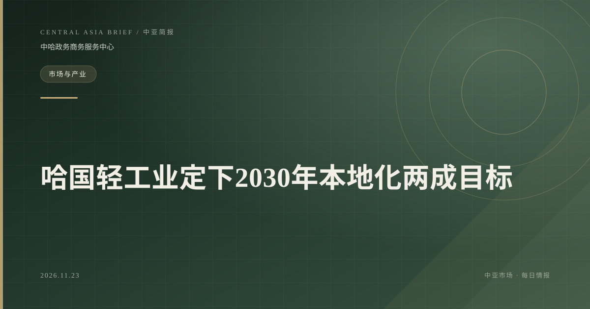

成品油出口禁令延至2027年5月，轻工业以税收优惠和长期合同换取产能翻倍，Samruk-Kazyna采购透明度再受质疑。

今日要点
轻工业本地化目标
哈萨克斯坦工业和建设部部长纳加斯帕耶夫表示，到2030年，哈国销售的全部轻工业产品中20%将由本国生产，整体产量计划翻倍 [4]。为支撑这一目标，政府将向企业提供税收优惠、服装与鞋类的长期合同以及优惠贷款 [4]。这一组合意味着政策重心从单纯补贴转向以采购订单锁定需求，本地化比例带有明确的品类指向（服装、鞋类）。
对纺织、鞋服类中国企业而言，本地化比例目标与长期合同机制同时构成竞争与切入机会：既可能抬高本地组装与生产的要求，也为合资、代工与设备输出留出空间。具体税率、合同条款与优惠申请条件仍须以哈国官方最新规定及专业顾问意见为准 [4]。
成品油出口禁令延长
哈萨克斯坦将成品油出口禁令延长至2027年5月 [19]。该措施延续了对成品油外流的限制，直接影响炼化产品跨境贸易的可行窗口与合同安排。
涉及油品贸易、物流与炼厂配套业务的企业，需要据此重新评估跨境销售路径与库存周期；禁令的具体适用范围、豁免情形与执行细则，应以哈国官方最新公布文本为准 [19]。
采购透明度争议
在讨论刺激制造业与引入承购合同的政府时段会议上，库鲁尔泰副主席叶斯帕耶娃批评Samruk-Kazyna基金对私营企业的采购拒绝缺乏透明度，称该基金经常展示大规模进口替代计划，但实际情况更为复杂 [3]。
这一表态出现在讨论承购合同与制造业激励的场合，说明进口替代的政策目标与采购执行之间仍存在落差。对希望进入该基金供应链的供应商而言，准入过程的不确定性仍是现实变量；相关采购规则以基金与监管机构正式发布为准 [3]。
数字资产与初创生态
哈萨克斯坦国家银行在去中心化金融发展报告中表示，计划以测试模式建立数字资产流动性池，使交易无需买卖双方双向报价即可自动成交，初期仅涉及坚戈计价资产，并对成交价格进行调节 [1]。
区域创新层面，INMerge创新峰会2026将于11月30日至12月1日在巴库举行，超过40家初创企业将角逐5万美元现金奖，届时将有120家入选初创、200余名国际演讲者参与 [2]。该活动由PASHA Holding主办，属于区域创新平台活动，与哈国本地政策无直接关联 [2]。
对企业意味着什么
- 判断：轻工业20%本地化目标配合长期合同，服装鞋类企业宜提前接触本地代工与合资选项，但须核实优惠申请门槛。
- 判断：成品油出口禁令延至2027年5月，油品贸易与物流合同应按此窗口重排，避免按短期禁令假设定价。
- 判断：Samruk-Kazyna采购透明度争议提示准入风险，供应商应保留书面沟通记录并准备替代渠道。
- 判断：坚戈数字资产自动交易仍处测试设计阶段，短期不宜作为结算或融资安排的基础。
信息来源
- [1] Kursiv — В Казахстане хотят запустить автоматический обмен цифровыми активами · 2026.11.23
- [2] The Astana Times — More Than 40 Startups to Compete for $50,000 at INMerge 2026 in Baku · 2026.11.23
- [3] Kursiv — Еспаева раскритиковала «Самрук-Казына» за непрозрачные отказы бизнесу в закупках · 2026.11.23
- [4] Kursiv — 20% одежды и обуви в Казахстане будут местного производства к 2030 году · 2026.11.23
- [19] 维度网 — 哈萨克斯坦延长成品油出口禁令至2027年5月 · 2026.11.23
本文由中哈政务商务服务中心编辑部基于公开来源整理，引用编号对应文末信息来源；仅作一般性信息参考，不构成法律、税务或投资建议。 涉及具体政策、费率与许可要求，请以哈萨克斯坦官方最新规定及持牌专业机构意见为准。